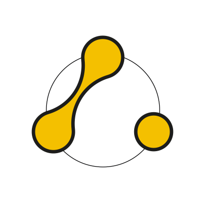

Presse & Media
Pressekontakt
Für Presseanfragen, Interviewwünsche oder weiterführende Informationen steht folgender Kontakt zur Verfügung:
Alexander Lexa
Co-Founder & CEO
E-Mail: press@aict.group
Media Kit & Pressemitteilungen
Unser digitaler Presseordner enthält aktuelle Pressemitteilungen, detaillierte Hintergrundinformationen zu unserem KI-System peaceflow sowie hochauflösendes Bildmaterial zur redaktionellen Nutzung.
↗ Zum AICT Google Drive Presseordner
Brand Assets (Logos)
Hier stehen unsere offiziellen Logos (Bild- und Wortmarken in verschiedenen Formaten und Auflösungen) für die redaktionelle Berichterstattung zur Verfügung. Wir bitten darum, die Proportionen und Farben der Logos nicht zu verändern.
- AICT Group: ↗ Zum Google Drive Ordner
- peaceflow AI: ↗ Zum Google Drive Ordner
Über die AICT Group (Boilerplate)
Die AICT Group ist ein in Wien ansässiges Technologieunternehmen, das sich auf die Entwicklung menschenzentrierter KI-Systeme für Konfliktverständnis und Transformation spezialisiert hat. Über die Entwicklung einzelner Produkte hinaus verfolgt das Unternehmen die langfristige Vision, ein Ökosystem zu schaffen, das Technologie, menschliche Expertise und Forschung rund um den verantwortungsvollen Einsatz künstlicher Intelligenz in komplexen menschlichen Situationen verbindet.